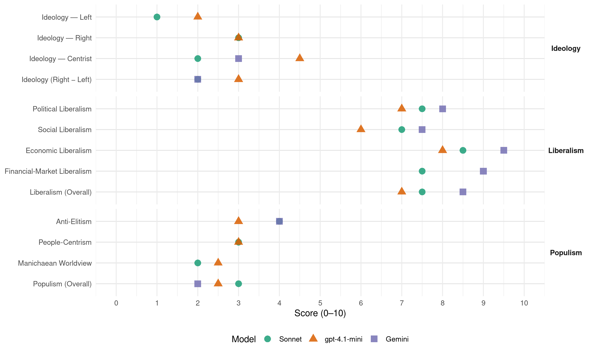

ACT (New Zealand, 2020)
manifesto_id 64420_202010
Get full text: This site shows derived annotations and short verbatim quotes only. The full manifesto text is © Manifesto Project / WZB — obtain it via manifesto-project.wzb.eu using the manifesto_id above.
Headline scores
| Dimension | Sonnet | gpt-4.1-mini | Gemini |
|---|---|---|---|
| Populism (Overall) | 3.0 | 2.5 | 2.0 |
| Anti-Elitism | 4.0 | 3.0 | 4.0 |
| People-Centrism | 3.0 | 3.0 | – |
| Manichaean Worldview | 2.0 | 2.5 | – |
| Ideology (Right − Left) | 2.0 | 3.0 | 2.0 |
| Liberalism (Overall) | 7.5 | 7.0 | 8.5 |
| Political Liberalism | 7.5 | 7.0 | 8.0 |
| Social Liberalism | 7.0 | 6.0 | 7.5 |
| Economic Liberalism | 8.5 | 8.0 | 9.5 |
| Financial-Market Liberalism | 7.5 | – | 9.0 |
Evidence per dimension
Economic Liberalism
Gemini · score 10.0 · verified · chunk 1
“keeps the debt low, cuts taxes, and gets the country back to surplus”
ACT has a fully-costed plan for economic recovery, which keeps the debt low, cuts taxes, and gets the country back to surplus, while keeping Kiwis in work.
Gemini · score 9.0 · verified · chunk 2
“low tax, low debt, high growth strategy led by private enterprise”
choose a low tax, low debt, high growth strategy led by private enterprise.
gpt-4.1-mini · score 8.0 · verified · chunk 1
“Cut wasteful spending Reduce the 30% tax rate to 15% and cut GST to 10%”
Our priorities are: 1: Getting Kiwis Back To Work 90-day trials for all businesses Three-year moratorium on minimum wage increases 2: Balancing The Books Borrow $76 billion less than Labour over the current decade Return to surplus by 2028 and begin repaying the debt Cut wasteful spending Reduce the 30% tax rate to 15% and cut GST to 10% for 12 months
gpt-4.1-mini · score 8.0 · verified · chunk 2
“We would cut taxes to get the economy moving again and Kiwis back into work”
A Tax Cut for Every Earner ACT will cut taxes to get the economy moving again and Kiwis back into work. Tax cuts not only give earners more to spend and invest, they also make work and investment pay.
Sonnet · score 8.0 · verified · chunk 1
“Reduce the 30% tax rate to 15%”
Reduce the 30% tax rate to 15% and cut GST to 10% for 12 months. Cutting Red Tape: Repeal the Zero Carbon Act and the oil and gas ban
Sonnet · score 9.0 · verified · chunk 2
“low tax, low debt, high growth strategy led by private enterprise”
ACT says we have the power to reject that, and instead choose a low tax, low debt, high growth strategy led by private enterprise.
Financial-Market Liberalism
Gemini · score 9.0 · verified · chunk 1
“insurance company regulated by the Reserve Bank”
The scheme would require builders to purchase insurance for all new dwellings from an insurance company regulated by the Reserve Bank.
Sonnet · score 7.0 · verified · chunk 1
“exempt investors from countries within the OECD”
We would exempt investors from countries within the OECD from the need to receive Overseas Investment Office approval to invest here, except where national security interests are at stake.
Sonnet · score 8.0 · verified · chunk 2
“automatically exempt investors from OECD countries”
We would automatically exempt investors from OECD countries from the requirement to gain Overseas Investment Office approval for investments, except where national security interests were at stake.
Political Liberalism
Gemini · score 8.0 · verified · chunk 1
“Freedom of expression is the basis of all freedoms”
under hate speech laws opinion is met by the power of the state. Freedom of expression is the basis of all freedoms. It must be defended.
Gemini · score 8.0 · verified · chunk 2
“freedom, property rights and the rule of law”
Maintain New Zealand’s values of freedom, property rights and the rule of law as non- negotiable
gpt-4.1-mini · score 7.0 · verified · chunk 1
“The Ministry of Health is not the organization to bring together manufacturing and distribution”
The Ministry of Health is not the organization to bring together manufacturing and distribution (PPE), software development (contact tracing), operations (testing and isolating). A multi-disciplinary, public and private, taskforce with overarching responsibility for our national strategy, like Taiwan’s Central Epidemic Command Centre, should be established instead.
gpt-4.1-mini · score 7.0 · verified · chunk 2
“Freedom of expression is the basis of all freedoms and must be protected”
Protecting Academic Freedom Freedom of expression is the basis of all freedoms and must be protected. ACT would require taxpayer-funded universities charged with being society’s critic and conscience to stand up for this sacrosanct principle.
Sonnet · score 7.0 · verified · chunk 1
“Freedom of expression is the basis of all freedoms”
Hate speech laws punish people on the basis of opinion. Freedom of expression is the basis of all freedoms. It must be defended. ACT has a policy for protecting free speech.
Sonnet · score 8.0 · verified · chunk 2
“Freedom of expression is the basis of all freedoms”
Protecting Academic Freedom. Freedom of expression is the basis of all freedoms and must be protected. ACT would require taxpayer-funded universities
Liberalism (Overall)
Gemini · score 9.0 · verified · chunk 1
“keeps the debt low, cuts taxes, and gets the country back to surplus”
ACT has a fully-costed plan for economic recovery, which keeps the debt low, cuts taxes, and gets the country back to surplus, while keeping Kiwis in work.
Gemini · score 8.0 · verified · chunk 2
“low tax, low debt, high growth strategy led by private enterprise”
choose a low tax, low debt, high growth strategy led by private enterprise.
gpt-4.1-mini · score 7.0 · verified · chunk 1
“Cut wasteful spending Reduce the 30% tax rate to 15% and cut GST to 10%”
Our priorities are: 1: Getting Kiwis Back To Work 90-day trials for all businesses Three-year moratorium on minimum wage increases 2: Balancing The Books Borrow $76 billion less than Labour over the current decade Return to surplus by 2028 and begin repaying the debt Cut wasteful spending Reduce the 30% tax rate to 15% and cut GST to 10% for 12 months
gpt-4.1-mini · score 7.0 · verified · chunk 2
“Freedom of expression is the basis of all freedoms and must be protected”
Protecting Academic Freedom Freedom of expression is the basis of all freedoms and must be protected. ACT would require taxpayer-funded universities charged with being society’s critic and conscience to stand up for this sacrosanct principle.
Sonnet · score 7.0 · verified · chunk 1
“Cutting Red Tape”
3: Cutting Red Tape Repeal the Zero Carbon Act and the oil and gas ban Allow investors from OECD countries to invest without having to jump through bureaucratic hoops
Sonnet · score 8.0 · verified · chunk 2
“businesses and workers are free to earn a greater share”
A New Zealand in which: businesses and workers are free to earn a greater share of the rewards from their efforts; the next generation is free to build houses like our grandparents did
Anti-Elitism
Gemini · score 4.0 · verified · chunk 1
“how government puts small business to the back of the bus”
The crisis also showed how government puts small business to the back of the bus. While supermarket chains who retain lobbyists in Wellington
Gemini · score 4.0 · verified · chunk 2
“back office bureaucrats at the Ministry”
Reduce the number of back office bureaucrats at the Ministry of Education by 50 per cent
gpt-4.1-mini · score 3.0 · verified · chunk 1
“government has almost fetishized comparisons with countries doing worse”
Unfortunately, the Government has not sought to do so. Throughout the Covid period, the Government has almost fetishized comparisons with countries doing worse. For instance, whenever the Government makes comparisons with Australia, it is with Victoria, seemingly ignoring that that has been an indulgent mistake.
gpt-4.1-mini · score 3.0 · verified · chunk 2
“Government interference in the administration of racing”
ACT sees racing’s main issues as: The excessive cost of administering racing for the size of the industry Lower financial returns to owners as a percentage of costs Loss of horses and horsemanship expertise overseas Government interference in the administration of racing Lack of promotion of the industry
Sonnet · score 4.0 · verified · chunk 1
“elites decide what we can and can’t say”
we risk following other countries into censorship, where elites decide what we can and can’t say. ACT stands staunchly in favour of freedom of expression.
Sonnet · score 4.0 · mixed · chunk 2
“politicians evidently cannot be trusted with infrastructure”
based on the sensible intuition that politicians cannot be trusted with interest rates. Based on their abject failure to deliver a workable system, politicians evidently cannot be trusted with infrastructure either.
Ideology — Centrist
Gemini · score 3.0 · verified · chunk 1
“how government puts small business to the back of the bus”
The crisis also showed how government puts small business to the back of the bus. While supermarket chains who retain lobbyists in Wellington
gpt-4.1-mini · score 5.0 · verified · chunk 1
“Government as referee, not player: allow arrivals to isolate at an Airbnb”
ACT’s approach A multi-disciplinary Epidemic Response Centre Government as referee, not player: allow arrivals to isolate at an Airbnb and be electronically monitored; strict punishment for rule-breakers A risk-weighted response: treat different countries and travellers with different levels of caution
gpt-4.1-mini · score 4.0 · verified · chunk 2
“We have a bold vision for a freer, more prosperous New Zealand”
This fully costed Alternative Budget shows how we would free New Zealanders’ potential and come out of COVID-19 as a richer country. ACT has a bold vision for a freer, more prosperous New Zealand. A New Zealand in which: businesses and workers are free to earn a greater share of the rewards from their efforts; the next generation is free to build houses like our grandparents did;
Sonnet · score 2.0 · verified · chunk 1
“Getting Kiwis Back To Work”
Our priorities are: 1: Getting Kiwis Back To Work 90-day trials for all businesses Three-year moratorium on minimum wage increases
Sonnet · score 2.0 · verified · chunk 2
“low tax, low debt, high growth strategy”
ACT says we have the power to reject that, and instead choose a low tax, low debt, high growth strategy led by private enterprise.
Ideology — Left
gpt-4.1-mini · score 2.0 · verified · chunk 1
“Cut wasteful spending Reduce the 30% tax rate to 15% and cut GST to 10%”
Our priorities are: 1: Getting Kiwis Back To Work 90-day trials for all businesses Three-year moratorium on minimum wage increases 2: Balancing The Books Borrow $76 billion less than Labour over the current decade Return to surplus by 2028 and begin repaying the debt Cut wasteful spending Reduce the 30% tax rate to 15% and cut GST to 10% for 12 months
gpt-4.1-mini · score 2.0 · verified · chunk 2
“Chronic long-term dependency on welfare is damaging the spirit”
Chronic long-term dependency on welfare is damaging the spirit and wellbeing of too many New Zealanders and their children. This needs to change.
Sonnet · score 1.0 · verified · chunk 1
“cut taxes to get the economy moving”
ACT will cut taxes to get the economy moving again and Kiwis back into work. Tax cuts not only give earners more to spend and invest
Sonnet · score 1.0 · verified · chunk 2
“remove subsidies for commercial forestry investment”
ACT will remove all subsidies for commercial forestry investment. Our farmers are some of the most efficient food producers in the world
Ideology (Right − Left)
Gemini · score 2.0 · verified · chunk 1
“how government puts small business to the back of the bus”
The crisis also showed how government puts small business to the back of the bus. While supermarket chains who retain lobbyists in Wellington
gpt-4.1-mini · score 3.0 · verified · chunk 1
“government has almost fetishized comparisons with countries doing worse”
Unfortunately, the Government has not sought to do so. Throughout the Covid period, the Government has almost fetishized comparisons with countries doing worse. For instance, whenever the Government makes comparisons with Australia, it is with Victoria, seemingly ignoring that that has been an indulgent mistake.
gpt-4.1-mini · score 3.0 · verified · chunk 2
“New migrants should be willing to adapt to and endorse New Zealand’s values”
New Zealand is a nation of immigrants. Openness to newcomers is part of our national DNA. New Zealanders value equality, free speech and the rule of law. ACT believes our immigration policy should reflect these values. New migrants should be willing to adapt to and endorse New Zealand’s values.
Sonnet · score 2.0 · verified · chunk 1
“moratorium on minimum wage increases”
ACT will: /Place a moratorium on minimum wage increases for three years. Labour increased the minimum wage as the economy was going into recession
Sonnet · score 2.0 · verified · chunk 2
“low tax, low debt, high growth strategy led by private enterprise”
ACT says we have the power to reject that, and instead choose a low tax, low debt, high growth strategy led by private enterprise.
Ideology — Right
gpt-4.1-mini · score 3.0 · verified · chunk 1
“Repeal the Zero Carbon Act and the oil and gas ban”
3: Cutting Red Tape Repeal the Zero Carbon Act and the oil and gas ban Allow investors from OECD countries to invest without having to jump through bureaucratic hoops Limit government’s ability to pass harmful regulation
gpt-4.1-mini · score 3.0 · verified · chunk 2
“New migrants should be willing to adapt to and endorse New Zealand’s values”
New Zealand is a nation of immigrants. Openness to newcomers is part of our national DNA. New Zealanders value equality, free speech and the rule of law. ACT believes our immigration policy should reflect these values. New migrants should be willing to adapt to and endorse New Zealand’s values.
Sonnet · score 3.0 · verified · chunk 1
“moratorium on minimum wage increases”
ACT will: /Place a moratorium on minimum wage increases for three years. Labour increased the minimum wage as the economy was going into recession
Sonnet · score 3.0 · verified · chunk 2
“Maintain New Zealand’s values of freedom, property rights”
Maintain New Zealand’s values of freedom, property rights and the rule of law as non-negotiable conditions that all immigrants must accept.
Manichaean Worldview
gpt-4.1-mini · score 3.0 · verified · chunk 1
“To discontinue it is to consciously choose for some people to die for the greater good”
Some have engaged in the debate over whether the elimination strategy should be continued. To discontinue it is to consciously choose for some people to die for the greater good, an intolerable calculus for New Zealand. Instead, we need to ask how elimination can be made affordable.
gpt-4.1-mini · score 2.0 · verified · chunk 2
“The rights of victims should trump the rights of criminals”
Law and Order ACT believes protecting the safety and property of its citizens is the government’s first and most important job. The rights of victims should trump the rights of criminals. People should feel safe at home, at work and in public.
Sonnet · score 2.0 · verified · chunk 1
“campaign of demonisation”
The rural sector has been given a short reprieve from the campaign of demonisation. It’s time to put that change in rhetoric into action.
Sonnet · score 2.0 · verified · chunk 2
“high tax, high debt path that has nearly bankrupted”
One is a Government-led, high tax, high debt path that has nearly bankrupted the country before. ACT says we have the power to reject that
People-Centrism
gpt-4.1-mini · score 4.0 · verified · chunk 1
“We must compare ourselves with, and seek to emulate, Taiwan”
Instead, we must compare ourselves with, and seek to emulate, Taiwan, the country that is the clear winner on a wellbeing basis. A Wellbeing Approach to Covid-19 New Zealand needs a Wellbeing Approach to fighting Covid-19 Our response can’t be only at the border, we need deeper layers of defence
gpt-4.1-mini · score 2.0 · verified · chunk 2
“New Zealanders locked out of the labour market cannot provide for their families”
Such levels of unemployment are unacceptable in the long term. New Zealanders locked out of the labour market cannot provide for their families and are robbed of the inherent dignity of work. And, not only does spending on unemployment benefits increase, tax revenues also fall precipitously.
Sonnet · score 3.0 · verified · chunk 1
“Kiwis back into work”
ACT will cut taxes to get the economy moving again and Kiwis back into work. Tax cuts not only give earners more to spend and invest
Sonnet · score 3.0 · verified · chunk 2
“free New Zealanders’ potential”
This fully costed Alternative Budget shows how we would free New Zealanders’ potential and come out of COVID-19 as a richer country.
Populism (Overall)
Gemini · score 2.0 · verified · chunk 1
“how government puts small business to the back of the bus”
The crisis also showed how government puts small business to the back of the bus. While supermarket chains who retain lobbyists in Wellington
Gemini · score 2.0 · verified · chunk 2
“back office bureaucrats at the Ministry”
Reduce the number of back office bureaucrats at the Ministry of Education by 50 per cent
gpt-4.1-mini · score 3.0 · verified · chunk 1
“government has almost fetishized comparisons with countries doing worse”
Unfortunately, the Government has not sought to do so. Throughout the Covid period, the Government has almost fetishized comparisons with countries doing worse. For instance, whenever the Government makes comparisons with Australia, it is with Victoria, seemingly ignoring that that has been an indulgent mistake.
gpt-4.1-mini · score 2.0 · verified · chunk 2
“Government interference in the administration of racing”
ACT sees racing’s main issues as: The excessive cost of administering racing for the size of the industry Lower financial returns to owners as a percentage of costs Loss of horses and horsemanship expertise overseas Government interference in the administration of racing Lack of promotion of the industry
Sonnet · score 3.0 · verified · chunk 1
“elites decide what we can and can’t say”
we risk following other countries into censorship, where elites decide what we can and can’t say. ACT stands staunchly in favour of freedom of expression.
Sonnet · score 3.0 · verified · chunk 2
“politicians evidently cannot be trusted with infrastructure”
based on the sensible intuition that politicians cannot be trusted with interest rates. Based on their abject failure to deliver a workable system, politicians evidently cannot be trusted with infrastructure either.
Social Liberalism